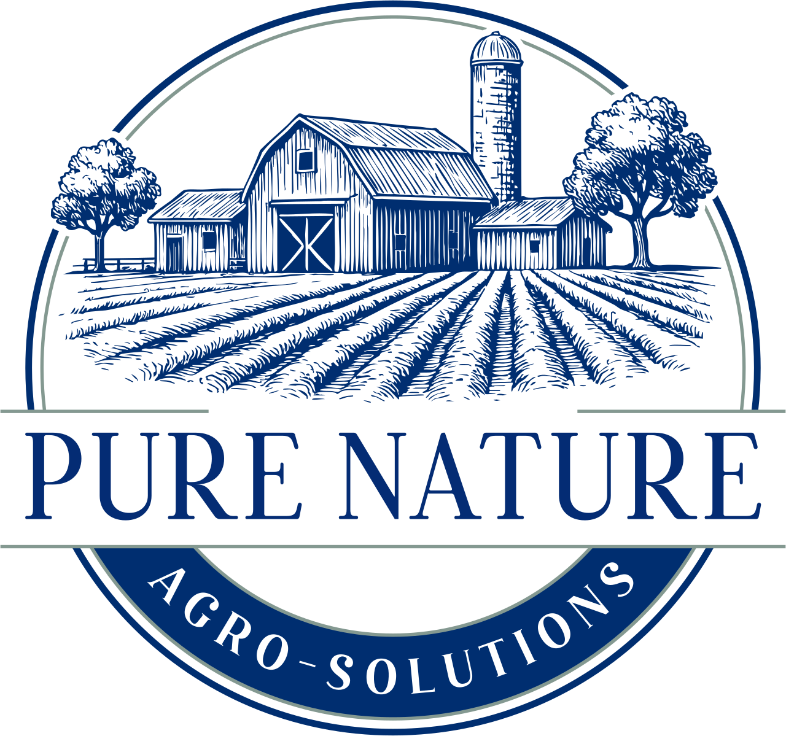
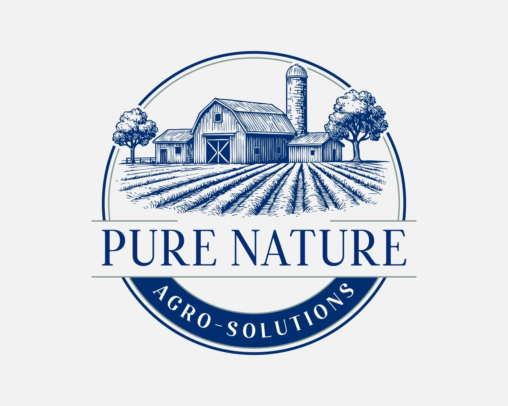
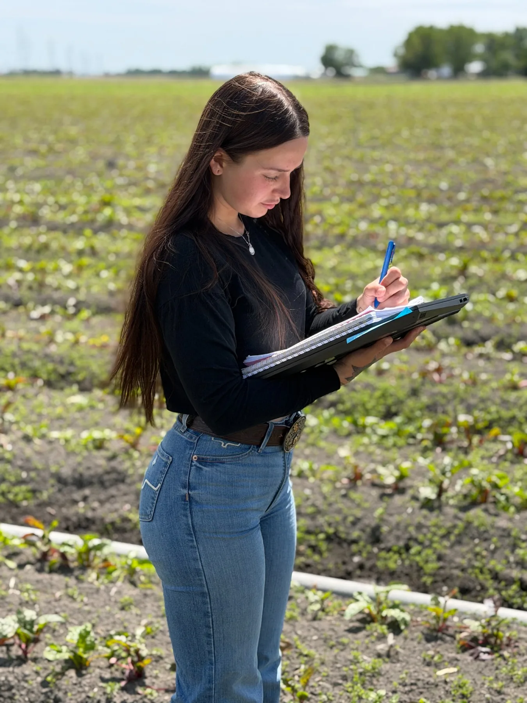
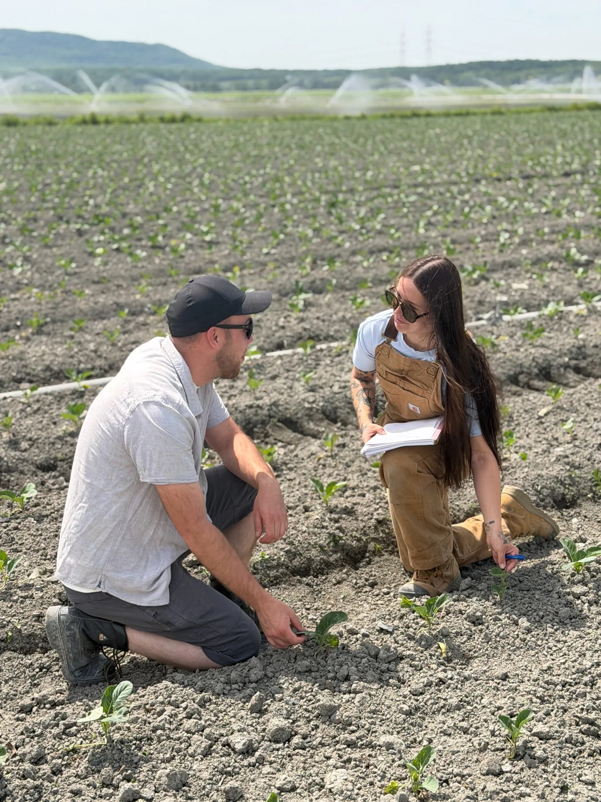
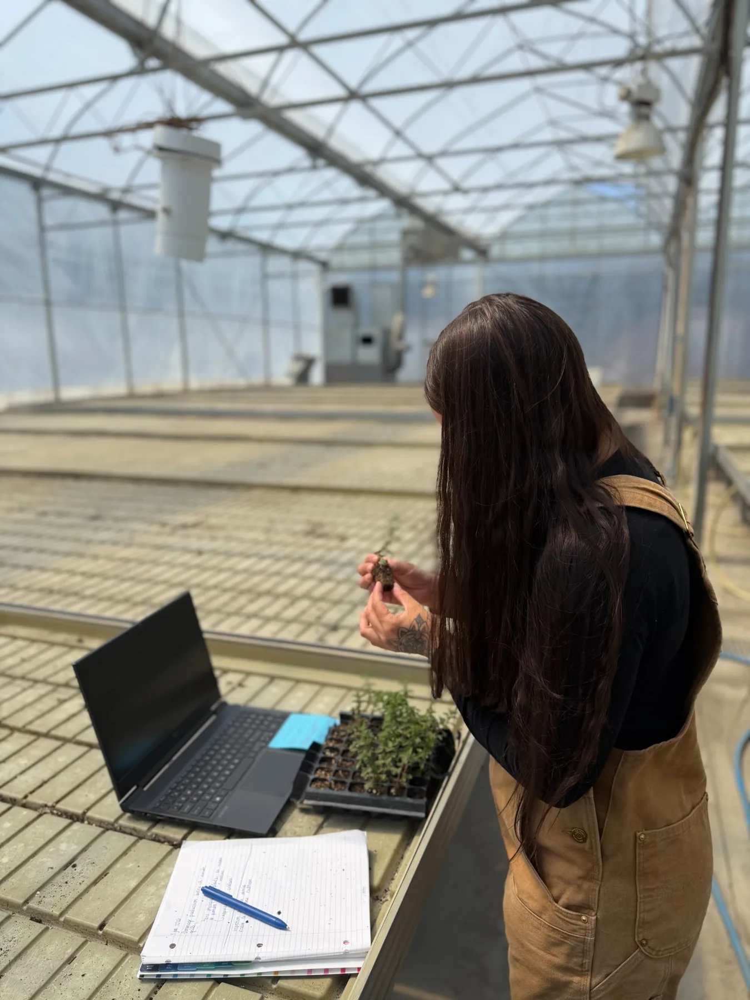

Structuration de projets
Transformer une idée, un besoin ou un enjeu de terrain en projet clair, organisé et prêt à être présenté.

Pure NatureInnovation agricole · Structuration · Terrain
Accompagnement stratégique en innovation agricole, structuration de projets et développement opérationnel pour les entreprises agricoles et agroalimentaires.

Pure Nature Agro-Solutions accompagne les entreprises agricoles et agroalimentaires dans la structuration, la documentation et la mise en œuvre de projets d’innovation, d’amélioration opérationnelle et de développement stratégique.
Nos services
Transformer une idée, un besoin ou un enjeu de terrain en projet clair, organisé et prêt à être présenté.
Accompagner les projets d’innovation agricole, d’adaptation d’équipements, d’automatisation et d’amélioration technique.
Mettre en place des outils de suivi pour documenter les essais, les observations, les résultats et l’évolution des projets.
Préparer les projets pour faciliter les échanges avec les partenaires techniques, financiers, fiscaux ou stratégiques.
Aider les entreprises à mieux organiser leurs processus, leurs priorités, leurs suivis et la progression de leurs projets.
Notre approche
Chaque mandat part de la réalité opérationnelle de l’entreprise. L’objectif est de clarifier les besoins, structurer l’information, documenter les démarches et faire avancer les projets avec méthode.



À propos
Fondée par Mégane Trudeau, Pure Nature Agro-Solutions est née de la volonté de rapprocher la réalité du terrain agricole de la rigueur du développement stratégique.
Mon parcours combine expérience terrain, gestion de projet, innovation appliquée, documentation et coordination. J’accompagne les entreprises agricoles et agroalimentaires afin de transformer leurs idées, leurs enjeux et leurs opportunités en projets clairs, crédibles et mobilisables.
Exemples de projets
Passons à l’action
Une première discussion permet de clarifier votre besoin, de voir où se situe votre projet et d’identifier les prochaines étapes possibles.
Pure Nature Agro-Solutions
megane.trudeau@pnagrosolutions.com 514-756-4966 pnagrosolutions.com Écrire à Mégane